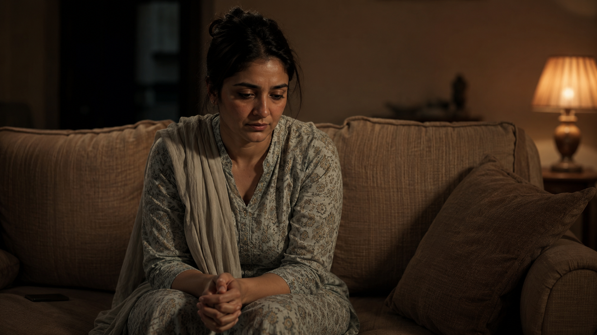

"Main bas thaka hua hoon." I am just tired. This is the sentence I hear most often from clients in Pakistan who are, in truth, living with depression. Not laziness. Not weakness of faith. Not a bad attitude. Depression — a real, diagnosable, and treatable condition that millions of Pakistanis carry silently every single day.
If you have been feeling persistently low, empty, or disconnected for more than two weeks, this article is for you. We will look at what depression actually feels like in a Pakistani context, the words we reach for instead of naming it, and why so few people here ever seek help. If you already know you want support, you can go straight to depression therapy in Pakistan for how treatment works and what it costs.
How Widespread Is Depression in Pakistan?
Pakistan's National Psychiatric Morbidity Survey (2022) found that 35.7% of the population is living with a common psychiatric illness, which includes depression and anxiety disorders. The World Health Organization estimates that 24 million people in Pakistan need psychiatric help.
Sources: National Psychiatric Morbidity Survey of Pakistan, 2022 | Frontiers in Health Services, 2024The Words We Use Instead — and the Symptoms Behind Them
In Pakistan, we rarely say "I am depressed." Instead we say:
- "Dil nahi lagta kisi cheez mein" — I find no interest in anything.
- "Neend nahi aati raat ko" — I cannot sleep at night.
- "Sab kuch theek hai phir bhi andar se khali lagta hai" — Everything is fine on the outside, but inside I feel empty.
- "Main khud ko burden samajhta/samajhti hoon" — I feel like a burden on everyone.
These are not complaints. These are symptoms. Clinical depression is not a mood. It is a shift in how your brain functions — affecting your sleep, appetite, concentration, motivation, and your sense of self.
Common signs to look out for include:
- Persistent low mood lasting most of the day, nearly every day, for at least two weeks
- Loss of pleasure in things you used to enjoy — hobbies, socialising, food, even family
- Fatigue that sleep does not fix — you wake up exhausted
- Difficulty concentrating — work, studies, even conversations feel overwhelming
- Changes in appetite or weight — eating too much or too little
- Physical aches — headaches, body pain, or stomach issues with no clear medical cause
- Feelings of worthlessness or guilt — often amplified by family expectations
- Withdrawing from people — avoiding calls, gatherings, even loved ones
- Thoughts of hopelessness — feeling like things will never get better
If you recognise five or more of these symptoms over two weeks or more, please do not dismiss them as tiredness or weakness. This is your mind asking for help.
"Yeh Sab Waswasa Hai": The Phrases That Silence Us
Research published in Frontiers in Psychiatry (2025) identified cultural narratives, social norms, and stigma as the primary reasons Pakistanis avoid seeking mental health support. In plain language, we have all heard these phrases:
- "Yeh sab waswasa hai" — This is all just whispers of the devil.
- "Zyada socha karo mat" — Stop overthinking.
- "Shukr karo, logon ke haal aur bure hain" — Be grateful, others have it worse.
- "Kamzor iman wale hain jo depression hota hai" — Only people with weak faith get depressed.
These responses, however well-intentioned, send one message: your pain is not real, or it is your fault. This is why over 90% of people in low-and-middle-income countries — including Pakistan — never access mental health treatment despite needing it.
Source: WHO-AIMS Evaluation of Pakistan's Mental Healthcare System, Springer Nature 2024Depression is not a character flaw. It is not weakness of faith. It is a health condition with biological, psychological, and social roots — and it responds to treatment, just as high blood pressure or diabetes does.
Naming It Is the Hard Part
Recognising depression for what it is tends to be the difficult step. Treating it is far better mapped: talk therapy has one of the strongest evidence bases in mental health, and research on culturally adapted CBT in Pakistan has shown significant reductions in depressive symptoms, with participants finding the therapy culturally and religiously meaningful.
The specific methods — CBT, integrative psychotherapy, behavioural activation — along with what a session actually looks like, how many you are likely to need, and what it costs, are all set out on the depression therapy in Pakistan page.
Depression Is Treatable
The WHO ranks depression as the single largest contributor to global disability. But it is also one of the most treatable mental health conditions — with the right support, the majority of people with depression recover fully.
Source: Frontiers in Health Services — Closing the Mental Health Gap in Pakistan, 2024The Second Barrier: There Are Almost No Therapists
Stigma stops people asking for help. Scarcity means that even when they do ask, there is often nobody within reach. Pakistan has fewer than 500 psychiatrists for a population of over 220 million, and the majority are concentrated in a handful of major cities.
Source: WHO-AIMS Evaluation of Pakistan's Mental Healthcare System, 2024For someone in a smaller city, the nearest qualified therapist may be a province away. That gap — not a lack of willingness — is why so much depression in Pakistan goes untreated, and it is the gap online sessions exist to close.
When Tiredness Is Actually Depression
You do not need to be in crisis to deserve help. In fact, the earlier depression is treated, the faster and more complete the recovery tends to be. It is worth speaking to someone if:
- Your low mood has lasted more than two weeks
- You are struggling to function at work, in your studies, or at home
- You have withdrawn from family and friends
- You are sleeping too much or too little, or your appetite has significantly changed
- You are having thoughts of hopelessness or of not wanting to be here
If you are in crisis: if you are having thoughts of harming yourself, please do not wait for a therapy appointment. Contact your nearest hospital emergency department, call Rescue 1122, or tell someone you trust right now. Therapy can help you rebuild — but tonight, your safety comes first.
You Don't Have to Carry This Alone
Depression is real, it is common, and it is treatable. Healing with Attia offers confidential online therapy for depression across Pakistan — in Urdu and English — with a UK-certified integrative psychotherapist.
Book Your First Session via WhatsApp